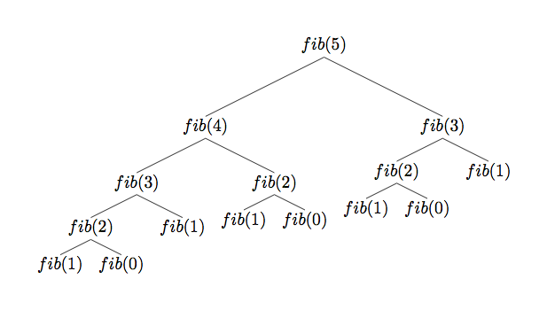
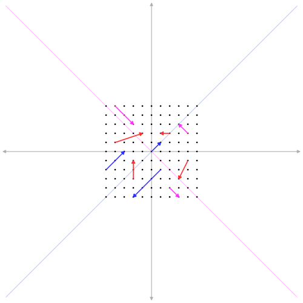

Três algoritmos para a sequência de Fibonacci
·

A sequência de fibonacci é uma velha conhecida dos que estudam programação. Por isso, esse post não deve soar tão estimulante para pessoas que trabalham com programação há muito tempo, mas prometo que algo ainda pode ser aproveitado. Aqui pretendo mostrar três algoritmos para sequência, e todos eles foram importantes para melhorar meu entendimento de programação.
O primeiro deles é o mais usual. O segundo é por recursão. Já o terceiro é o que me motivou a fazer o post, nele faço uso extensivo de álgebra linear, e com isso é possível aprender muito mais a fundo sobre a natureza desses números, por exemplo, o que caracteriza o seu crescimento?
O primeiro eu vi pela primeira vez escrito em C++ num curso de informática que fiz. O segundo, num curso de Introdução à Ciência da Computação do MIT OpenCourseWare. E o terceiro na aula 22 do curso de Linear Algebra do MIT OpenCourseWare, com Gilbert Strang, cujas aulas são masterpieces. O segredo desta maneira está em ver a sequência de Fibonacci como um sistema de equações lineares dinâmico, que evolui no tempo. E para entender melhor como isso funciona, precisamos introduzir o conceito de autovalores/autovetores. Mas antes vejamos os algoritmos mais simples.
A maneira comum
Apenas para recordar o que é a sequência de fibonacci: dados os dois primeiros números da sequência (comumente 0 e 1), o próximo número é a soma dos dois que o precedem.
$$ F_0 = 0, F_1 = 1 $$
$$ F_n = F_{n-1} + F_{n-2} $$
Com isso em mente, podemos escrever o algoritmo que muitos já devem conhecer.
def std_fib(n):
a, b = 0, 1 # tuple assignment
for _ in range(n):
fib = a + b
a, b = b, fib
return fib
[std_fib(i) for i in range(1, 13)]
[1, 2, 3, 5, 8, 13, 21, 34, 55, 89, 144, 233]
Acredito que não muito possa ser dito sobre este algoritmo, mas é interessante tentar escrevê-lo de um jeito mais pythonic.
Por exemplo, legal pontuar como atribuí os valores às variáveis. O que tá rolando ali é chamado de tuple assignment. No Python, você pode atribuir o conteúdo de uma lista, tuple etc. a variáveis numa única linha. Em outra linguagem talvez precisaríamos de variáveis temporárias para isso.
Caso alguém nunca tenha visto esse algoritmo, poso explicar brevemente. Primeiro atribuímos à variável “a” o valor 0, e à “b” o valor 1. Depois, no loop, calculamos o número de fibonacci, que é a soma desses dois. O primeiro, então, é 1. Em seguida, o que fazemos é atribuir à “a” o valor de “b” e à “b” o valor do número de fibonacci, de forma que no próximo loop, a soma será 1 + 1, e no próximo 1 + 2, 2 + 3 etc.
Para comparação, vamos testar sua performance em termos de eficiência.
%timeit std_fib(10000)
2.46 ms ± 96.5 µs per loop (mean ± std. dev. of 7 runs, 100 loops each)
Por recursão
Como não sou estudante de ciência da computação, esse eu conheci recentemente até e achei maravilhoso. Ele tem a vantagem de ser bem legível, limpo.
def rec_fib(n):
if n == 0 or n == 1:
return n
else:
return rec_fib(n - 1) + rec_fib(n - 2)
[rec_fib(i) for i in range(13)]
[0, 1, 1, 2, 3, 5, 8, 13, 21, 34, 55, 89, 144]
E funciona da seguinte forma: Primeiro, temos um caso base (base case), em que o valor é conhecido.
Neste caso, definimos que os números 0 e 1 da sequência de fibonacci são, respectivamente, 0 e 1. Para todos os outros, calculamos de forma recursiva. Por exemplo, \( F_3 = F_2 + F_1 = F_1 + F_0 + F_1 = 1 + 0 + 1 = 2 \)
E é uma boa maneira de introduzir o conceito de recursão na computação. Agora vejamos quão eficiente ele é.
%timeit rec_fib(20)
4.81 ms ± 625 µs per loop (mean ± std. dev. of 7 runs, 100 loops each)
Para calcular o vigésimo número ele demorou muito mais do que o algoritmo anterior, que calculou um número muito maior!! Por que será que isso aconteceu? Uma imagem pode ajudar a ilustrar o porquê disso.

O que acontece é que a função recursiva acaba requisitando os mesmos números de fibonacci múltiplas vezes e, para números muito grandes, esse excesso de chamadas desnecessárias prejudica muito a perfomance do algoritmo. Muito mesmo, se você chamar a função com 60 como argumento, talvez não tenha paciência para esperar ela terminar de calcular.
Existe um jeito bem simples de resolver esse problema, que vem da assim chamada programação dinâmica, um conjunto de técnicas para otimização de algoritmos. A técnica que cabe usar aqui é chamada de memoization, e consiste em “reciclar” os valores que já calculamos previamente, para não precisar recalculá-los. Isso é exatamente o que precisamos!
Agora, como poderíamos fazer isso? Um jeito bem eficiente é usar um hash table, o que no Python é um set ou um dictionary. A vantagem dessa estrutura de dados é que o tempo de procura independe de quantos dados armazenados você tem ali:
def ffib(n, memo={0: 0, 1: 1}):
try: # tente retornar um valor no 'memorizador'
return memo[n]
except: # se não conseguir, calcule o numero
fib = ffib(n - 1) + ffib(n - 2)
memo[n] = fib # guarde-o
return memo[n]
%timeit ffib(20)
178 ns ± 0.385 ns per loop (mean ± std. dev. of 7 runs, 10000000 loops each)
%timeit ffib(1000)
183 ns ± 8.12 ns per loop (mean ± std. dev. of 7 runs, 1000000 loops each)
O que é muito mais rápido. É bem impressionante o quanto essa técnica pôde melhorar o código. Uma coisa a se notar, no entanto, é que se você chamar a função com 10000, pelo menos com esse código, dá “stack overflow”… o que eu não esperava e honestamente nem sei por que é assim.
Por Álgebra Linear
Finalmente, matrizes. Comecemos primeiro com a equação básica, \( Fn = F{n-1} + F_{n-2} \).
Mas, para termos um sistema de equações lineares, precisamos de mais uma equação pelo menos. A escolha mais simples é: \( F*{n-1} = F*{n-1} + 0\cdot F_{n-2} \). O que, em linguagem de matrizes, pode ser escrito como:
\[ \begin{bmatrix}F_{n} \\ F_{n-1}\end{bmatrix} = \begin{bmatrix}1 & 1\\1 & 0\end{bmatrix} \cdot \begin{bmatrix}F_{n-1} \\ F_{n-2}\end{bmatrix} \]
Uma denominação mais interessante para essa relação é: \( u*{t+1} = Au_t \). O papel que desempenha a matriz A é o de transformar o vetor no “tempo” t para nos dar o vetor no “tempo” seguinte. Estamos lidando aqui com um sistema dinâmico, que evolui no tempo, e queremos saber, por exemplo, qual o \( u*{10000} \). Como podemos fazer isso?
Bom, para começar, é conveniente considerarmos um vetor base \( u_0 \), que no nosso caso pode ser perfeitamente \( \begin{bmatrix} 1 \\ 0 \end{bmatrix} \). Assim, segue diretamente que \( u_1 = Au_0 \). E, disso, que \( u_2 = Au_1 = A \cdot A \cdot u_0 = A^2u_0 \). Logo, a fórmula geral é:
$$ u^k = A^ku_0 $$
O que sugere de imediato que a resposta reside nas potências da matriz. Mas isso pode ser bem pesado matematicamente. Felizmente, existe uma maneira muito conveniente para resolver esses casos, e envolve os autovalores/autovetores (eigenvalues/eigenvectors) de uma matriz. Mas, afinal, o que são eles?

Simply put, os autovetores são vetores característicos de uma matriz que, após transformados por ela, não mudam de direção, mas é possível que mudem em magnitude dependendo do autovalor. Matematicamente,
$$ Ax = \lambda x $$
Em que \( x \) é um autovetor da matriz \( A \) e \( \lambda \) um autovalor do autovetor. Note que, por isso, o autovetor pode encolher (se \( 0 < \lambda < 1 \)), ou aumentar (se \( \lambda > 1 \)), ou apontar para a direção oposta (se \( \lambda < 0 \)) quando transformado.
Agora, o próximo passo, um grande passo, é notar que nós podemos decompor a matriz \( A \) em seus autovetores e autovalores. Isto é possível se os autovetores forem todos linearmente independentes, caso em que uma matriz cheia de autovetores tem uma inversa, e isso será crucial para nós.
Daí que, tratando \( S \) como uma matriz de autovetores nas colunas e \( \Lambda \) como uma matriz de autovalores na diagonal e zeros em todo o resto, podemos afirmar que
$$ AS = S\Lambda $$
O que não é óbvio, mas que pode ser visto deste modo:
\[ A \cdot \begin{bmatrix} x_1 & x_2 \\ x_1 & x_2 \end{bmatrix} = \begin{bmatrix} \lambda_{1} x_1 & \lambda_{2} x_2 \\ \lambda_{1} x_1 & \lambda_{2} x_2 \end{bmatrix} = \begin{bmatrix} x_1 & x_2 \\ x_1 & x_2 \end{bmatrix} \cdot \begin{bmatrix} \lambda_{1} & 0 \\ 0 & \lambda_{2} \end{bmatrix} \]
Caso não tenha ficado claro: cada coluna de \( S \) é um autovetor. Quando fazemos \( AS \), obtemos uma matriz cujas colunas são os autovetores vezes seus respectivos autovalores (consequência direta de \( Ax = \lambda x \)). Essa matriz pode, enfim, ser “diagonalizada” separando esses seus dois componentes como mostrado.
Ok, mas por que isso é útil? Queremos investigar as potências de uma matriz afinal! Essa decomposição de matriz serve justamente a esse propósito. Vejamos.
Vamos multiplicar \( AS \) pela direita por \( S^{-1} \). Isso dá: \( A = S\Lambda S^{-1} \), já que \( SS^{-1} = I \). Agora, \( A^2 = S\Lambda S^{-1}S\Lambda S^{-1} = S \Lambda^{2}S^{-1} \). E, em geral:
$$ A^k = S \Lambda^{k}S^{-1} $$
E assim vemos o quanto a decomposição pode simplificar a exponenciação de uma matriz! Agora, retomando lá do início, \( u_k = A^ku_0 \) pode ser reescrito como \( u_k = S \Lambda^{k}S^{-1}u_0 \).
Mas perceba que seria mais interessante termos \( u_0 \) em uma nova “forma”, mais especificamente, como uma combinação linear dos autovetores, \( Sc = u_0 \), onde c é o vetor de coeficientes que resolve esse sistema de equações, \( c = S^{-1}u_0 \). E, com isso, nós temos tudo que precisamos porque
$$ u_k = A^ku_0 = S \Lambda^{k}S^{-1} Sc = S \Lambda^{k}c $$
Isso implica que, no nosso caso, para uma matrix 2x2 (só dois autovetores), \( uk = c_1\lambda{1}^{k}x1 + c_2\lambda{2}^{k}x_2 \), onde os \( x_i \) são os autovetores, e o restante escalares. O que indica que a evolução do nosso sistema de equações é totalmente ditada pelos autovalores (não importa quantas vezes a matriz A transforme os autovetores, a direção deles nunca muda).
Agora resta calcular tudo com o NumPy.
O primeiro passo é criar a matriz A. Logo depois, obter os autovalores/autovetores, nessa ordem, com a função numpy.linalg.eig().
import numpy as np
A = np.array([[1, 1], [1, 0]])
evalues, evectors = np.linalg.eig(A)
print(evalues, evectors, sep="\n\n")
[ 1.61803399 -0.61803399]
[[ 0.85065081 -0.52573111]
[ 0.52573111 0.85065081]]
Mas, lembrando que queremos os autovalores na matriz diagonal \( \Lambda \). Também precisamos calcular o vetor c.
Lambda = np.diag(evalues)
c = np.linalg.solve(evectors, np.array([1, 0])[:, np.newaxis])
Antes, vamos olhar para a nossa matriz \( \Lambda \), porque ela pode revelar coisas interessantes:
Lambda
array([[ 1.61803399, 0. ],
[ 0. , -0.61803399]])
O primeiro número pode parecer familiar para o leitor, afinal é um dos mais famosos: o número de ouro. E é precisamente ele que descreve como os números de Fibonacci estão crescendo!! Como sabemos que \( uk = c_1\lambda{1}^{k}x1 + c_2\lambda{2}^{k}x_2 \), substituindo temos:
$$ u_k = c_1\cdot(1.618)^{k}\cdot x_1 + c_2\cdot(-0.618)^{k}\cdot x_2 $$
E fica evidente que, para um k muito grande, o número de ouro é o que governa o crescimento dos números, com o outro termo tentendo a 0 com k aumentando arbitrariamente. Fica claro também que esses números crescem exponencialmente.
Agora, vamos criar uma função para calcular \( u_k \). Nela usaremos a matriz \( S \) (evectors), o vetor c e a matriz \( \Lambda \).
def FIB(k):
return (evectors @ np.linalg.matrix_power(Lambda, k) @ c)[0]
for i in range(1, 15):
print(FIB(i), end="\t")
[1.] [2.] [3.] [5.] [8.] [13.] [21.] [34.] [55.] [89.] [144.] [233.] [377.] [610.]
Tudo o que fiz foi calcular \( u_k \) com a fórmula e extrair do vetor resultante a primeira linha (\( F_k \)).
E quanto à sua eficiência?
%timeit FIB(10000)
32.8 µs ± 1.46 µs per loop (mean ± std. dev. of 7 runs, 10000 loops each)
Não surpreende ser tão rápido, estamos usando o NumPy afinal.
Mas a beleza dessa abordagem está menos em sua eficiência e mais no que a álgebra linear pode nos revelar. A partir dela pudemos entender muito melhor sobre esses números, o que governa o seu crescimento. Mas, além disso, problemas com sistemas dinâmicos como esse estão em todos os lugares, e lidar com eles requer inevitavelmente conhecer os autovetores/autovalores de uma matriz e como podemos usá-los.
A sequência de Fibonacci é um bom exemplo para introduzir esses conceitos da álgebra linear, cujo conhecimento é exigido por muitos outros problemas mais práticos/complexos, como Cadeias de Markov, e o leitor pode achar interessante também que o algoritmo do Google tem como fundamento os autovetores de uma matriz de Markov. Enfim, trata-se de um tópico fascinante por si só.
Antes de terminar o post, fica a minha recomendação para um melhor entendimento de tudo isso: a série de vídeos “Essence of Linear Algebra” do 3Blue1Brown e este site que conta com ótimas visualizações do que acabamos de fazer aqui.